ImmerLingo · The problem
Most of the people I surveyed already learn through anime or TV. But their apps teach words through drills, away from the scenes they care about, and the words don’t hold: half of those who’d tried say they forget what they learned.
The context
Japanese learners
4,000,750 learning worldwide
61% of schools name anime, manga and J-pop as a reason, the most cited
52,946 in India, up 47% in three years
My bet: learn before the scene, not only during it. See where you stand, warm up on its words, check yourself, then watch. Or just watch, the way Migaku works.
So my question became:
How might a beginner learn Japanese inside the show they love, and keep the words they meet there?
Tools: my competitive audit and Migaku’s Chrome Web Store listing. Learner numbers: Japan Foundation, Survey on Japanese-Language Education Abroad (2024 survey).
Who it’s for
The fan
Watches with English subtitlesLearning is a wish, not a habit yet. For a quarter of Duolingo’s Japanese learners, fun like anime is the top reason.The beginner · focus
Reads hiragana, wants to follow a showNeeds every reading and English close by. Most likely to give up after the first real episode.The immersion learner
Anime plus Anki, every dayServed well today by Migaku and Language Reactor. Who the beginner wants to become.Sample: 52 surveyed · 5 interviewed
Duolingo with Crunchyroll, 2023 (company survey data). Immersion routines: Refold and r/Refold community posts. Plus my survey, 5 interviews and three months as a learner.
The job
They asked for
Tap a word to translate it 27 of 38
Keep what I learn 19 of 38 forget
Someone to practise with 26 of 38
Needs: 38 who had tried learning a language, of 52 surveyed. Composite journey from interviews, forum threads and my own three months; quotes are illustrative. Japan Foundation data, via Melbourne Asia Review.
Ideation
How might we turn watching into small learning moments, without breaking the flow?
How might we tie progress to episodes watched, so milestones feel real?
How might we show help only when it’s wanted?
How might we fit in speaking practice? Parked for later.
Ideation
Every path leads into the player and back out. Desktop gets a sidebar, tablet a rail, phone a tab bar.
Decision 1 of 4 · Before the scene
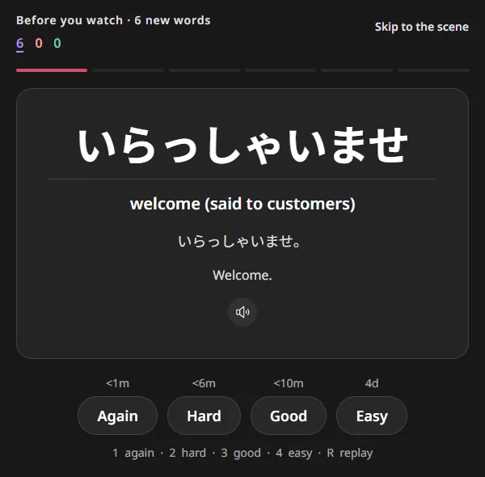
Warm-up: six words from the scene, graded like flashcards
Cut
Placement quiz. Asks people to judge themselves before they see anything.
Self-rating. Same problem, and two setup steps before any content.
Course first. Migaku’s order. The show arrives weeks later.
Evidence
32 of 52 already learn through anime or TV.
Knowing the words before a scene raises how much of it you follow.
Gain
Content in the first minute. Placement comes from how you watch.
Give up
No placement before the first scene, so the first scene must suit everyone.
Survey W3. Test findings #01, #04. Coverage: Hu & Nation 2000; Durbahn et al. 2024.
Decision 2 of 4 · During
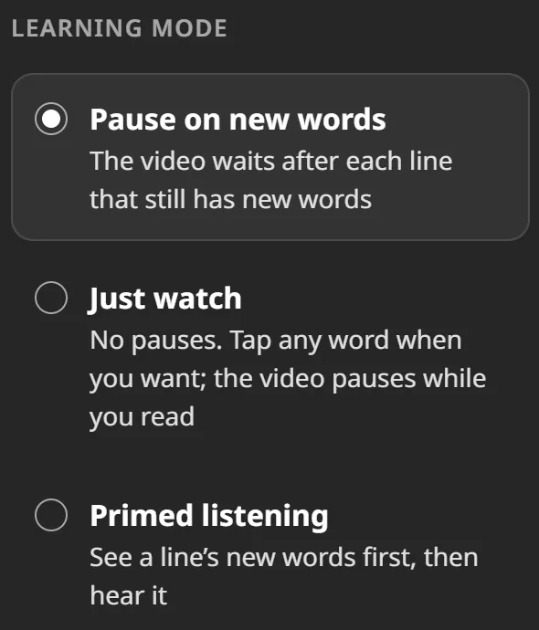
Three modes are built; pausing is the default
Cut
Pause on every look-up. Stops even more often.
Never pause. A beginner can’t read a line while it plays on.
Dual subtitles. Nothing to save, so nothing to review.
Evidence
Stopping mid-task costs the most; stopping at a break costs less.
Learner-paced segments help beginners, and few pause on their own.
In testing, even hovering over a word broke the flow.
Gain
Time to read at every line end, never mid-line.
Give up
The feeling of just watching. So it’s a mode, and the default gets an A/B test.
Adamczyk & Bailey 2004; Mayer & Chandler 2001; Biard, Cojean & Jamet 2018. Test finding #03.
Decision 3 of 4 · During
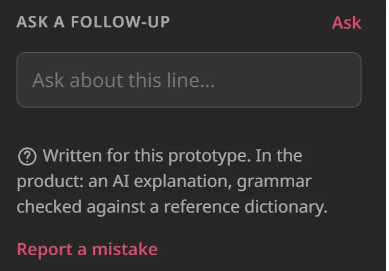
Prototype: the label says what is and isn’t real
Cut
No AI, written notes only. Can’t cover every line of every show.
AI with no label. A beginner can’t tell a wrong answer from a right one.
AI for single words only. Leaves the real question: why it was said that way.
Evidence
Say what the system can do, and how well. Let people correct it.
Show confidence in words, not a precise percentage.
Gain
An explanation for any line, at scale.
Give up
Certainty. A label shows a mistake only after the fact, so grammar gets high, medium or low confidence.
Amershi et al. 2019, Guidelines for Human-AI Interaction (G1, G2, G9, G11); Google PAIR Guidebook.
Decision 4 of 4 · After
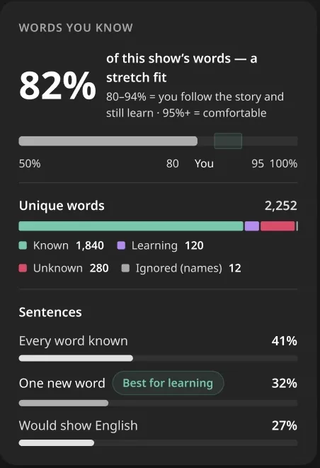
Case-study design · sample learner
Cut
JLPT level tags. An exam level, not this show.
Difficulty stars. Same for every learner.
A quiz after each scene. Turns watching back into a test.
Evidence
Comfortable comprehension needs about 95–98% of words known.
But learners skip words they don’t know, and over-claim what they know.
Gain
One number per show, before you press play, at no extra effort.
Give up
Accuracy: it runs high. Next: a range, a “seen, not confirmed” state and a three-word check.
Hu & Nation 2000; Durbahn et al. 2024; Prichard 2008; Meara & Buxton 1987.
Testing
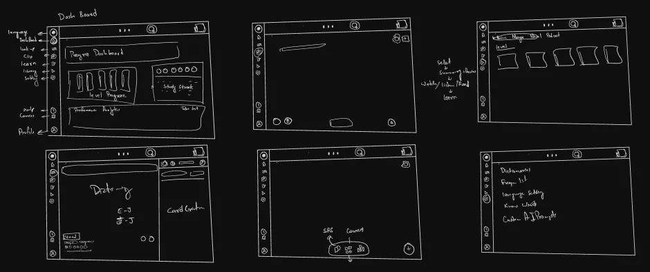
01 · Sketch
Home was a progress dashboard.
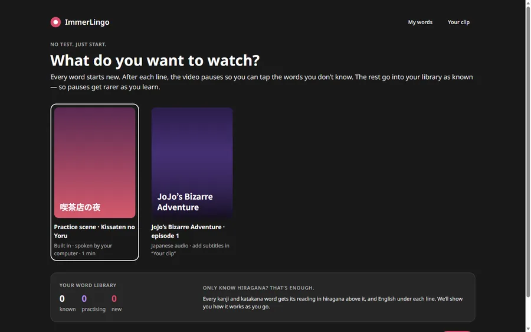
02 · First coded prototype
No test. A pause after every line with new words.
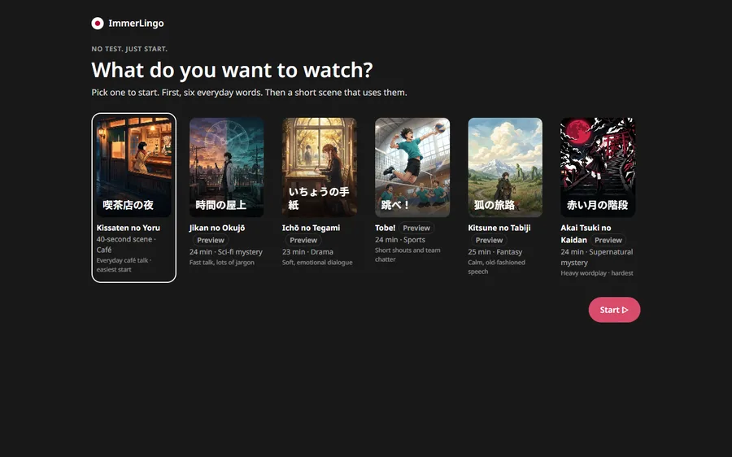
03 · Onboarding · tested with 12
Six shows rated by how they sound. Six words, then a short scene.
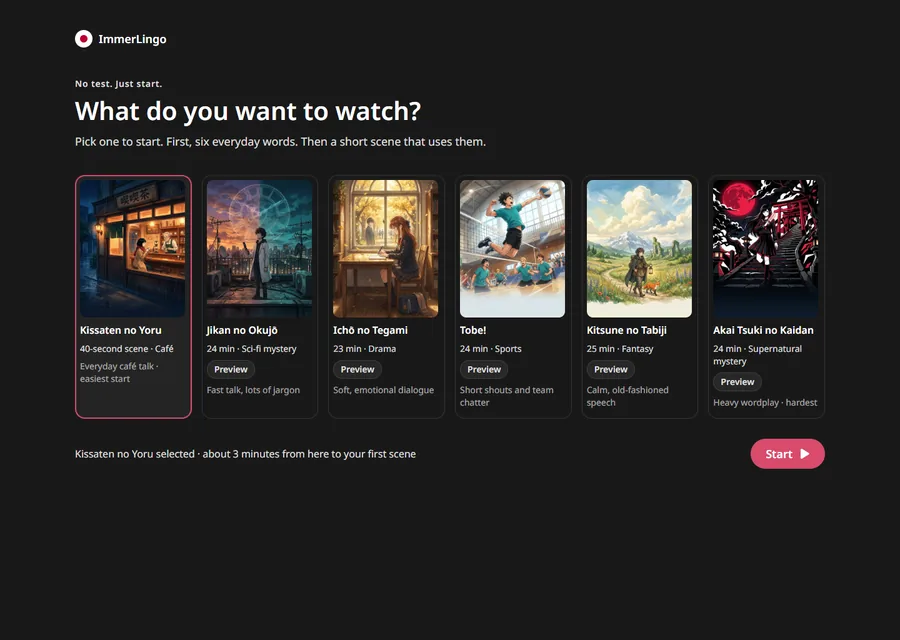
04 · After the tests · not yet tested
A guided first run, and the review schedule shown as real dates.
Changed
First-timers got stuck at the same few points: a guided first run. Flashcards needed explaining: the review schedule as real dates.
Held
Rewatching in Japanese only was the moment people liked most.
Open
People wanted shows they’d already seen. That questions the known-word number.
Limits
12 people, one session each, not recorded. Most didn’t know Japanese. Version 4 isn’t tested yet.
Sketched by hand, wireframed and designed in Figma, then built and changed as clickable prototypes with Claude, so every version could be used, not just looked at.
Design system
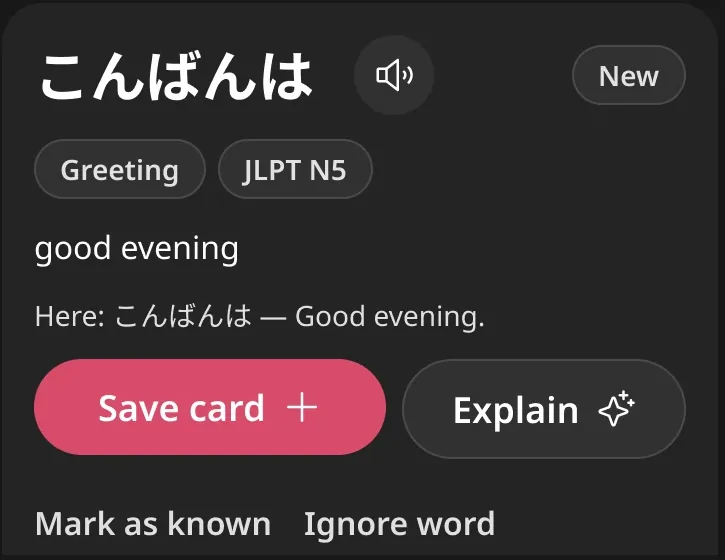
Type
こんばんは Good evening
Noto Sans with Noto Sans JP: Latin and Japanese stay clear at small subtitle sizes.
Colour
Tokens in HSBA with transparency layers, so surfaces and states hold in dark and light themes. Six level colours rate how hard a show is.
Components
Cards, buttons and inputs with defined states. Every screen is built from one set.
Responsive and adaptation
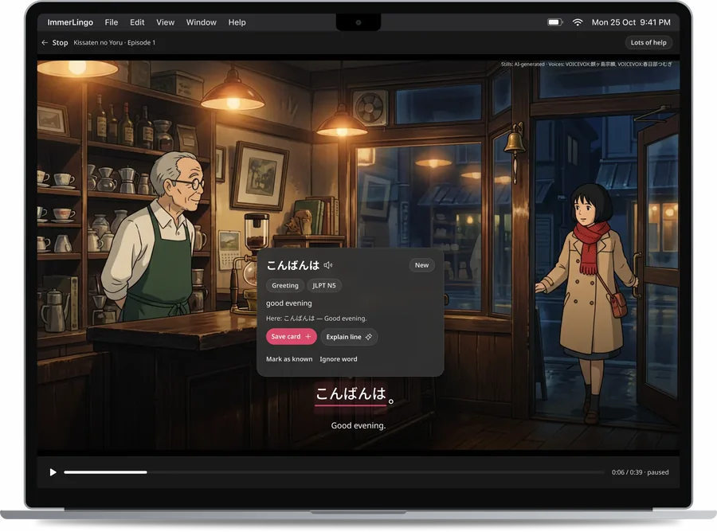
Desktop
Hover a word. The card opens over the line.
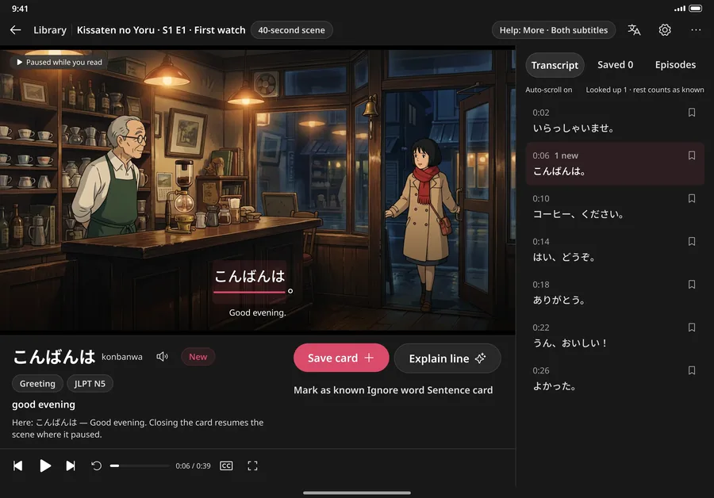
Tablet, landscape
Tap. The card docks below; transcript beside.
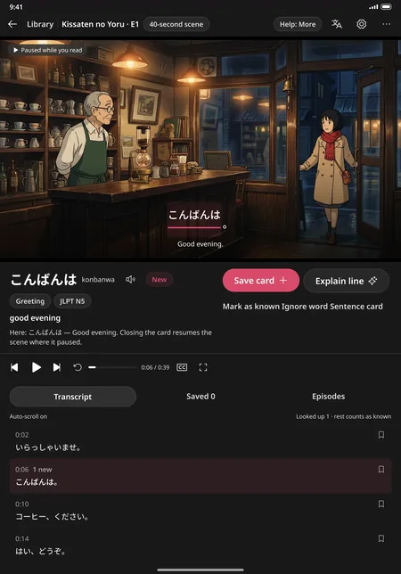
Tablet, portrait
Transcript moves under.
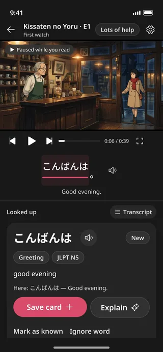
Phone
A sheet under the player.
Navigation follows the screen: a sidebar of six, a rail of six icons, then a tab bar of five, where Library and Read merge and Stats and Settings become “You”.
Accessibility
Next to check: screen readers on the subtitle layer, and testing with people who use them.
Summary
The same three habits I’d bring to AI analytics: show what an answer is based on, how sure it is, and how to correct it.
Backup · Research
Community
YouTube, Discord, forumsHow learners already teach each other, and where they give up.Evidence
Every mechanic, checkedSpaced review, recall, learning from captions: research first, then design.Learners
52 surveyed · 5 interviewed38 had tried learning a language. Interviews across five cities.Myself
3 months as the test subjectTried every method, and went deepest where the evidence was strongest: 200 mature Anki words.Survey: 6–15 June, self-selected. Interviews: Bangalore, Guwahati, Delhi, Pune, Gwalior.